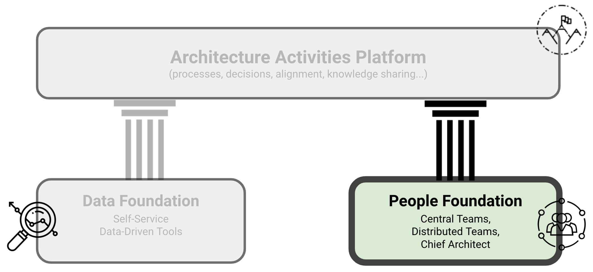
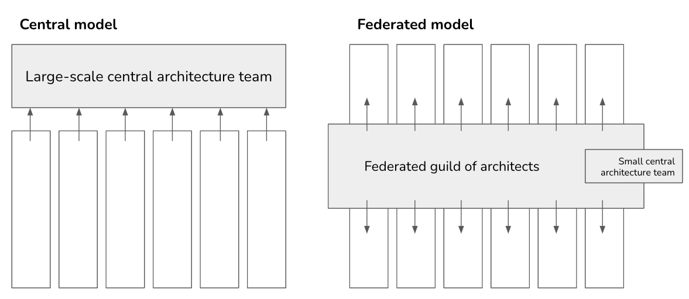

People Foundations: Collaborative Networks
IN THIS SECTION, YOU WILL: Understand that an architecture practice is all about people and get tips on creating organizational structures that support a practical IT architecture practice.
KEY POINTS:
- Developing an architecture practice requires having competent, empowered, and motivated architects. An architecture practice must carefully organize, empower, and leverage scarce talent.
- In my work in the past few years, I combined two teams of architects: a small central architecture team and a cross-organizational distributed virtual team.
Architecture does not scale through org charts alone. It scales through people who can connect strategy and execution, move across organizational boundaries, and help teams make better decisions in context.
That is why the second pillar of Grounded Architecture focuses on Collaborative Networks. If the first pillar gives architects a better grip on reality through data, this pillar ensures that insight can actually travel through the organization and shape decisions where they are made.
Good architects are scarce because the role demands an unusual combination of technical depth, domain understanding, organizational awareness, and the ability to build trusted relationships across the company. You cannot manufacture that talent on demand. But you can organize, empower, and amplify the impact of the talent you already have.
Without that human network, the data stays inert, the central team becomes a bottleneck, and architecture remains too detached from delivery to matter at scale. The practical question, then, is how to organize architectural work so that it preserves both alignment and reach.

Figure 1: The Grounded Architecture framework – Collaborative Networks.Centralized vs. Federated Architecture Practice
Strong architects do not work alone. They need a structure that lets expertise spread, local context surface, and decisions stay connected across teams. To understand what that structure should look like, it helps to start with the two classic organizational models for architecture.
Most IT architecture practices follow one of two foundational models: centralized or federated. These models define how architectural responsibilities are distributed, how decisions are made, and how architects collaborate with delivery teams (see Figure 2, adapted from [McKinsey, 2022]).

Figure 2: Central vs. Federated Architecture Practice.The Centralized Model
In a centralized model, a large central architecture team governs most architectural decisions. It sets standards, approves solution designs, and takes primary responsibility for infrastructure, operations, and security.
Development teams depend heavily on this central group for architectural direction, reviews, and implementation guidance. The main advantage is strong governance, consistency, and control, especially in regulated or complex environments. The downside is the risk of slowdowns, bottlenecks, and detachment from daily development reality.
The Federated Model
In the federated model, a smaller central team—often referred to as an Architecture Center of Excellence (CoE)—provides high-level strategy, shared principles, and support, but the execution of architecture is distributed.
Architects are embedded within product, platform, or domain teams. They work closely with delivery teams, supporting planning, technical decisions, and the long-term health of systems from within. This model emphasizes empowerment, speed, and context-awareness.
It is especially common in organizations with DevOps practices and cross-functional team structures, where architecture is treated as a shared responsibility embedded in delivery.
Trade-Offs and Trends
| Centralized Architecture | Federated Architecture |
|---|---|
| Strong global governance | High local autonomy and flexibility |
| Easier to enforce consistency | Faster decision-making in context |
| Risk of bottlenecks and detachment | Risk of fragmentation and misalignment |
| Clear oversight and accountability | Stronger alignment with team-level realities |
In practice, many organizations adopt a hybrid model that combines centralized clarity with local autonomy. This is where Collaborative Networks become especially valuable: they connect central architecture leadership with distributed practitioners so that the organization can preserve both alignment and agility.
The Hybrid Model
In complex organizations, defining responsibilities is not enough; you also need to place the right people in the right roles. In my experience, the most effective structure combines the strengths of centralized and federated models:
- A small central architecture team
- A network of architecture guilds and virtual architecture teams
This hybrid model goes beyond a lightweight Center of Excellence. The central team plays a proactive enabling role rather than acting as a passive service desk. It provides structure, continuity, and alignment, while distributed teams provide reach, scale, and local context.
A Coordinated Ensemble
The hybrid model works like a coordinated ensemble:
- The central team serves as the conductor—coordinating, setting the rhythm, and ensuring harmony.
- The guilds and virtual teams are the skilled musicians—each playing their part in local contexts but aligned with the overall composition.
Individually, they can perform successfully. Together, they create a more coherent and scalable architecture practice:
- Guilds and virtual teams enhance reach by involving more individuals in architecture discussions. They help scale alignment and surface insights from across the organization.
- The central team acts as a catalyst—connecting the dots, ensuring strategic coherence, and supporting distributed teams with tools, analytics, and cross-organizational relationships.
Central Architecture Team
Roles within the central team may vary, but it should never be treated as an isolated command center.
Instead, it should:
-
Build and maintain Lightweight Architectural Analytics: The system will not operate itself—especially not with emerging AI tools. Ownership, curation, and maintenance are essential.
-
Promote data-informed decision-making: It is not enough to simply have data; you must advocate for its use. The central team should be the example-setters in integrating analytics into real decisions.
-
Connect stakeholders: Architects need to serve as cross-organizational connectors—building bridges between departments, teams, and leadership layers.
-
Support community-building efforts: Guilds and distributed teams require coordination, rituals, and support. The central team should drive these initiatives and ensure continuity when participation wanes.
Architecture Guilds & Virtual Architecture Teams
Architecture communities—such as guilds, working groups, or virtual teams—are essential for any federated or hybrid architecture practice.
These communities typically include tech leads, staff engineers, and platform owners who:
- Act as architects within their domains
- Collaborate across teams and silos
- Mentor others and share architectural knowledge
- Drive best practices and surface challenges
They function as a peer-to-peer learning and alignment engine, helping architectural thinking scale across the organization.
Types of Communities
As your guilds expand, consider organizing them into various focus areas:
- General/Core architecture teams: Address broad, cross-cutting topics
- Specialist communities: Concentrate on specific stacks (e.g., mobile, cloud, frontend)
- Strategic initiative groups: Align on larger themes (e.g., cloud migration, platform consolidation, data strategy)
Routines for Collaboration
To connect central and distributed architecture efforts, structured collaboration is necessary:
- Regular forums (e.g., bi-weekly): Share updates, raise questions, and propose architectural suggestions
- Summits (annual or bi-annual): Bring people together to reflect, align, and learn
- Ad hoc deep-dive workshops: Address specific problems and explore new patterns collaboratively
The goal is to move from passive attendance to active participation. Architecture should be co-created, not handed down.
Architecture Is a Team Sport
Even the best frameworks will fail without a strong network of engaged, empowered individuals behind them. In a hybrid model, everyone has a role to play, and the central team exists to ensure those roles remain aligned and mutually reinforcing.
Great architecture is not built in silos. It is built together.
That is the larger role of this chapter in the manuscript. It makes explicit that architecture is not only a design capability but also a social one. Grounded Architecture depends on deliberately building the human connections that turn local knowledge into organizational alignment and learning.
Tips for Building Collaborative Networks
Every organization is different, but several practices have worked consistently well for me when building architecture teams and collaborative networks:
Start with the People Already Doing the Work
Before proposing significant organizational changes, identify and connect with the people already engaged in architecture work, regardless of their titles. Staff engineers, tech leads, platform owners, and solution experts often perform architectural roles informally.
Bringing these individuals together is never a wasted effort. It lays the groundwork for trust, alignment, and a shared understanding of architectural priorities.
Build a Team, Not Just a Community
If part of your architecture strategy includes creating a virtual team, go beyond forming an informal community of practice. Define clear roles, responsibilities, and expectations. Establish routines and rituals that foster accountability.
Architecture guilds function best when members know they are not just “showing up,” but actively contributing to something with impact and ownership.
Engage Outside the Architecture Circle
Strong collaborative networks extend beyond architects. Connect early with stakeholders outside of architecture—including product leaders, engineering managers, operations, data specialists, and finance personnel.
You will need their support, insight, and buy-in if you want an architecture practice that is integrated rather than isolated. The earlier you involve them, the stronger the network becomes.
Grow from Within
Avoid hiring what Gregor Hohpe refers to as a “digital hitman.” These are external experts brought in to “fix” the architecture in isolation.
Instead, invest in developing internal talent—individuals who already understand your systems, culture, and context. The best architects combine technical depth, domain fluency, and organizational awareness, which cannot be acquired overnight.
Externalize Your Work
Don’t work in isolation. Share what you are doing—both inside and outside the company.
- Participate in industry events.
- Publish blog posts or open-source tools.
- Invite feedback on your approach.
This not only increases the practice’s credibility and influence, but also helps attract strong talent. Visible architectural work draws in people who want to learn, contribute, and grow.
To Probe Further
- Agile and Architecture: Friend, not Foe, by Gregor Hohpe, 2020
- Crafting the optimal model for the IT architecture organization, by Christian Lilley et al., 2022
- Developers mentoring other developers: practices I’ve seen work well, by Gergely Orosz, 2022
Questions to Consider
Use the following questions to reflect on how architectural work is organized in your environment and how strong your collaborative network really is.
- Do you have a strong network of architects across the organization?
- Which central, federated, or hybrid model best represents your current architecture practice? Why was this model chosen, and how effective has it been for your organization?
- If you are part of a central architecture team, how would you support the rest of the organization? How would you contribute to the global architecture practice if you were part of a distributed virtual team?
- Consider having the roles of central architecture teams and federated architecture teams in your organization. How would they complement each other?
- How effective is the current division of responsibilities among architects in your organization? Are there areas of overlap or gaps in coverage?
- What steps has your organization taken to ensure architects are well-connected across all parts and levels? What impact has this had on transparency and the implementation of changes?
- Reflect on the diversity of team structures within your organization. How does this diversity impact the roles and responsibilities of architects?
Grounded Architecture Framework: Operating Model |
|||
| ← | → | ||